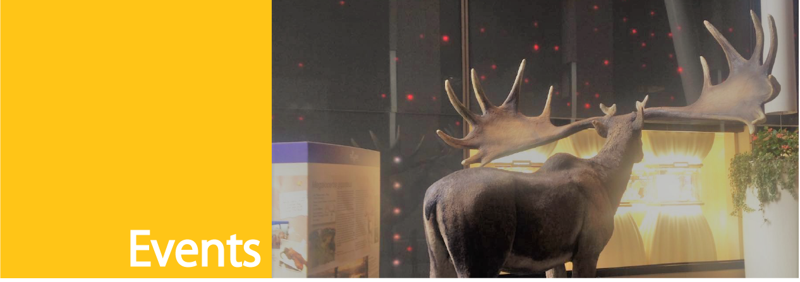
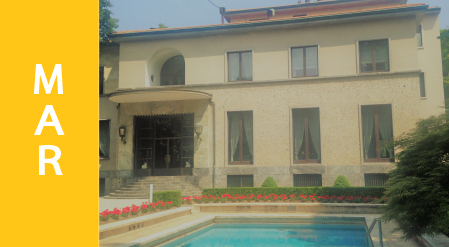
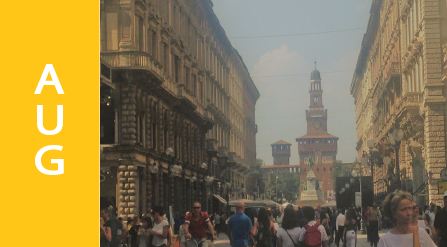
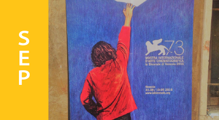
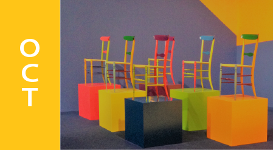
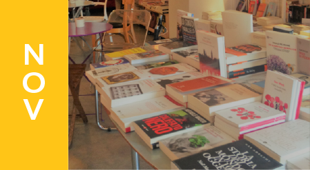
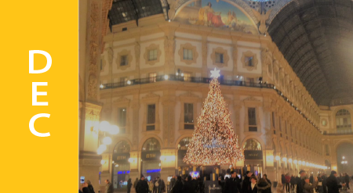

Milan is always busy. Concerts, plays, shows, exibitions of all sorts, but there are some times of the year that you have to clear your agenda to fit these appointments in.
-
January
1st January Concerts
Classic classical concerts in many teathers to celebrate the New Year.
-
February
Milan Fashion Week
Milan steps onto the international runway.

-
March
Stramilano
The Stramilano is an annual athletics event which bring more than 50.000 people walking and running around the city.
The FAI Days
When the doors of ancient buildings open to the public.
-
April
25th April
Celebrate around the city the Liberation Day.
Design Week
Inside and outside the Salone del Mobile events and exibishions around Milan for everybody.
-
May
Orticola
Exhibition of Flower Market, unusual and rare plants and fruits in the historical garden and buildings.
-
June
Le Vie del Cinema
Previews from Cannes Film Festival.
Arianteo
The open-air cinema in Milan at Palazzo Reale, CityLife, Umanitaria and Chiostro dell'Incoronata.

-
July
Swimming in Milan
Idroscalo and outdoor swimming pools open.

-
August
15th August
Celebrate the Saint Mary's Day with concerts and Fireworks at Castello Sforzesco.

-
June
Le Vie del Cinema
Previews from Venezia Film Festival and Locarno Film Festival.
Milan Fashion Week
Milan steps onto the international runway.
MITO September Music
With hundreds of concerts in Milan and Turin.

-
October
Fall Design Week
Plenty of meetings, conferences, films, exhibitions and installations around Milan.

-
November
Book City
A long weekend of widespread and free events throughout the city.
JazzMi
A widespread festival in theaters and clubs throughout the city.

-
December
7th December
La Scala opens its season of events with an Opera Premier.
AF - L'Artigiano in Fiera
The famous fair market dedicated to Italian and international crafts.
La fiera degli Oh Bej! Oh Bej!
Traditional Sant'Ambrogio festival market around Castestello Sforzesco.